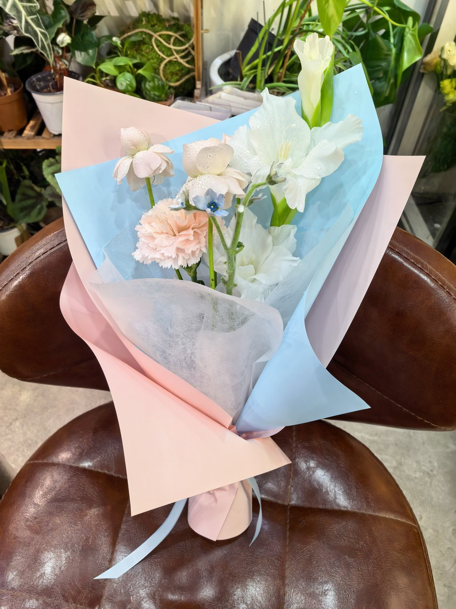

Rain Antares🏳️⚧️🍥
@Rain_Antar1121
中元节！也恰逢@nyaepheia离开这个世界一整个月呢…愿你在梦里一切都好～咱来抓你啦😘都变成软飘飘小幽灵了总能给咱抱着了叭૮ o̴̶̷᷄ ·̫ o̴̶̷̥᷅ ა
这束蓝粉白大花花是献给依菲雅小可爱哒～剑兰，樱花粉康乃馨，仙子之吻和蓝星花哦～🌷～
可惜咱找不到适合悼念她的地方…挺为难的，捧着花在玄武湖转了一大圈也不知道该放在哪呢…因为依菲雅不喜欢人多的地方，但晚上这里全是散步的人啊🥹咱只是和她来过这里，也不记得她那天有停下来对某个地方产生好感😭
最后决定把花花放在月亮上～皎洁的中元满月足够安静了吧…你会在月亮上乖乖等着咱嘛～要不我们在那片银色的大地上相约再会吧🥰
